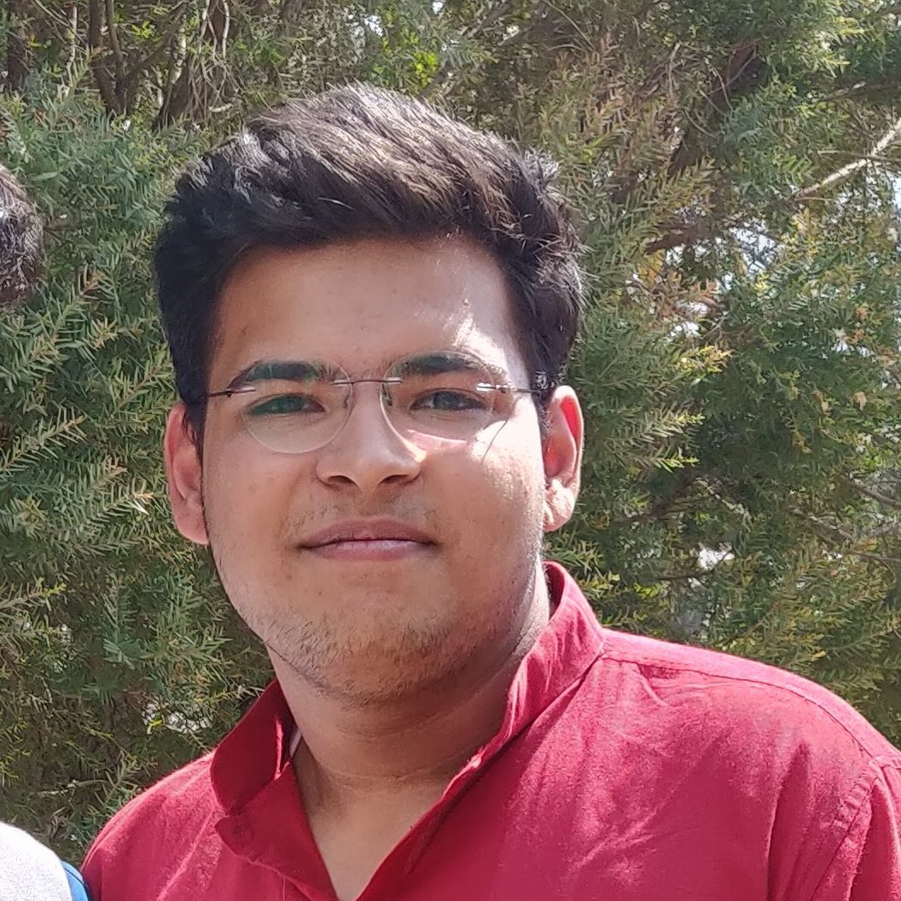

Kshitij Kotasthane
Student
Center of Excellence in Cyber Systems and Information Assurance
Indian Institute of Technology, Delhi
Hauz Khas, New Delhi 110 016, India
Phone: +8860443551
Email: jcs222657@iitd.ac.in
About
I am a second-year Master's student in Cybersecurity at Indian Institute of Technology, Delhi.
My research is focused on
securing cryptographic keys using multi-modal user biometrics
, under the supervision of
Prof. A. K. Bhateja
.
Contact
Linkedin -
Kshitij Kotasthane
Github -
kshitij86
Resume -
Kshitij's Resume
Education
M.Tech in Cybersecurity, Indian Institute of Technology, Delhi (2022 - present)
CGPA - 8.4/10
Thesis title -
Securing cryptographic keys using biometrics (under Prof. A. K. Bhateja)
Positions of Responsibiliy - Nucleus Placement Coordinator (2023 - present)
B.Tech in Computer Science and Engineering, Rajiv Gandhi Proudyogiki Vishwavidyalaya (2018 - 2022)
CGPA - 8.62/10 (first division with honors)